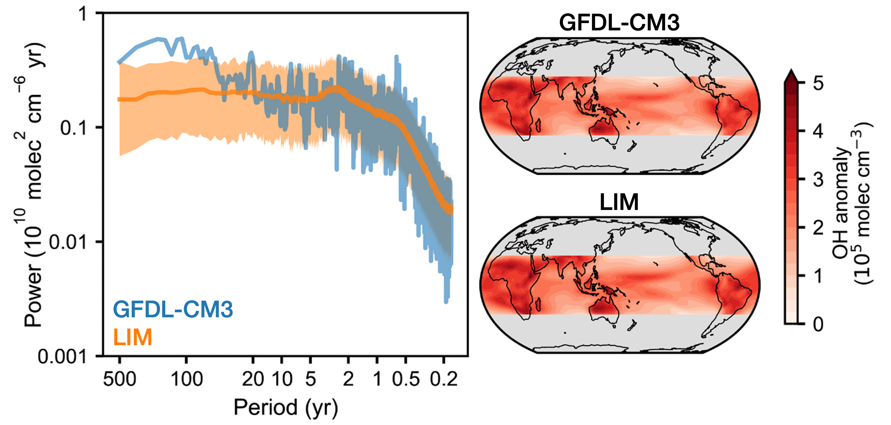

Working Group 3: Machine Learning
WG3 develops the computational infrastructure that makes FETCH4's observational and modeling advances scalable and interpretable. The group builds a hierarchy of reduced-order models and uses these tools alongside new observations in a chemical data assimilation framework to understand methane and atmospheric oxidation across timescales ranging from years to hundreds of thousands of years. In parallel, WG3 develops machine learning models to directly estimate OH and large methane point sources, providing independent observational constraints that complement the modeling and emulation work.

Emulator Hierarchy
Full chemistry-climate models provide the most complete description of methane-OH interactions, but their computational cost makes rapid hypothesis testing, uncertainty quantification, and data assimilation impractical. WG3 addresses this by building a hierarchy of physically interpretable emulators that reproduce the behavior of full chemistry-climate models at a fraction of the cost.
Simple box models. At the simplest level, box models allow us to interrogate methane variability across a range of timescales and identify the key processes that need to be captured by more complex emulators. These models simulate methane, its isotopologues, and OH, representing hemispheric averages in the troposphere and stratosphere. Despite their simplicity, box models have proven surprisingly powerful for interpreting the ice core record. Mei et al., PNAS (2026) showed that preindustrial methane variability recorded in polar ice cores can be explained by white noise fluctuations in the methane source-sink imbalance, integrated by the 10-year methane lifetime and smoothed by firn densification, without requiring slow or synchronous climate forcing. Related box modeling efforts extend this framework to represent all isotopologues measured in the FETCH4 project (δ13C-CH4, δD-CH4, 14CH4, 14CO).
Linear inverse models. At intermediate complexity, linear inverse models (LIMs) capture the spatiotemporal dynamics of the full chemistry-climate system in a computationally tractable framework. LIMs represent a nonlinear system as a combination of deterministic and stochastic components, where the slow, predictable dynamics are described explicitly and faster, unpredictable processes are parameterized as noise. They are well-established in climate dynamics but had not previously been applied to atmospheric chemistry. Mei et al., ACP (2025) demonstrated that a LIM trained on output from the GFDL chemistry-climate model can efficiently emulate both climate and chemical variability, reproducing both the spatiotemporal variability and the statistical characteristics of 1000-year free-running simulations. Because the LIM is stable and computationally cheap, it provides a practical surrogate for the full chemistry-climate model when performing chemical data assimilation, which requires large numbers of forward model evaluations that would be prohibitive with a full chemistry-climate model.
Deep learning emulators. At the top of the hierarchy, deep learning emulators provide the spatial resolution and chemical complexity needed to work directly with modern satellite and in situ observations. AuroraChem (Kim et al., in prep) is a coupled chemistry-climate emulator built by fine-tuning the Aurora foundation model, extended with the chemical fields needed to constrain OH and the oxidative capacity of the troposphere: OH, Cl, NO, NO2, O3, CO, and 14CO. Trained on GEOS-Chem output, AuroraChem runs approximately 300 times faster than GEOS-Chem while also simulating meteorology. It accurately reproduces spatial patterns of both physical and chemical fields at short lead times. AuroraChem is stable over year-long free rollouts. This emulator will enable joint meteorological and chemical data assimilation, a central goal of the FETCH4 project.

Research Highlights
Methane emissions from space. He et al., PNAS (2024) showed that historical Landsat multispectral imagery combined with deep learning can detect and quantify methane emissions from oil and gas infrastructure at 30-meter resolution, going back to 1986. Applied to Turkmenistan, the work found that methane emissions increased following the collapse of the Soviet Union, counter to the long-standing hypothesis that the USSR's decline reduced fossil methane emissions.
Atmospheric transport emulation. Dadheech & Turner, ACP (2026) developed FootNet (https://footnet-uw.github.io/), a deep learning emulator of atmospheric transport trained on 500,000 footprint examples across the contiguous United States. FootNet runs approximately 650 times faster than traditional Lagrangian transport models and generalizes to regions and meteorological conditions not seen during training, enabling real-time high-resolution greenhouse gas flux inversions without retraining. FootNet was applied to produce the first kilometer-scale methane flux inversion over the Permian Basin using TROPOMI observations from 2018 through 2025.
Satellite proxies for OH. Anderson et al., JGR (2026) established a methodology for constraining primary OH production globally from satellite observations, using a gradient-boosted regression tree trained on the MERRA-2 GMI simulation with inputs from OMI, MOPITT, AIRS, and MODIS. The resulting product covers 68-73% of the global domain with uncertainties of 25% or less.